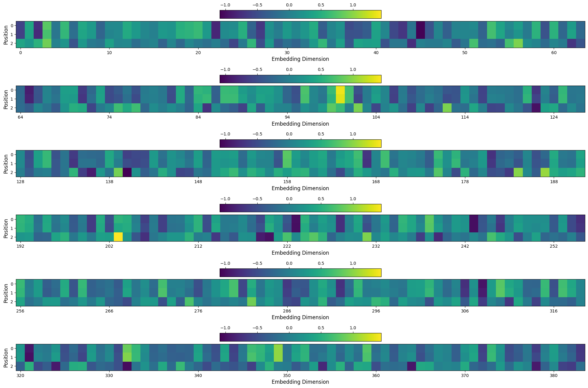
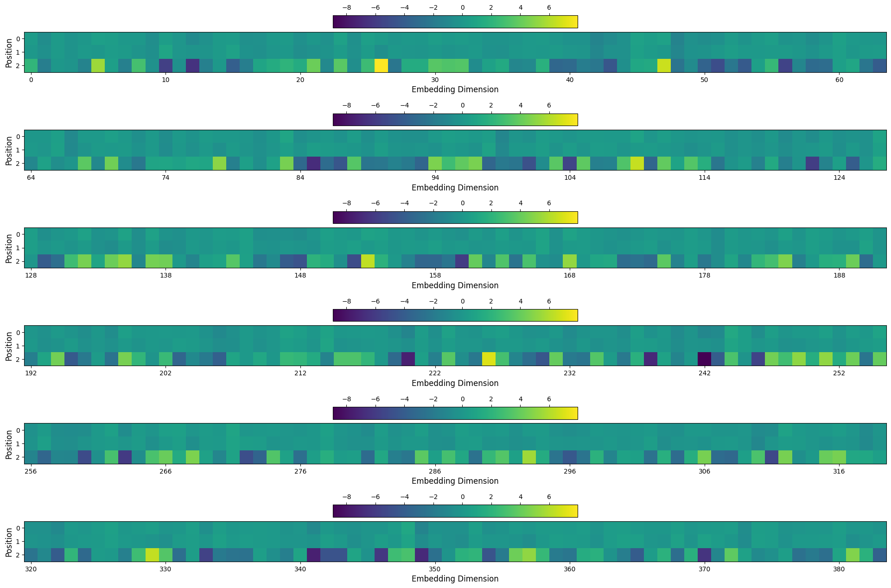
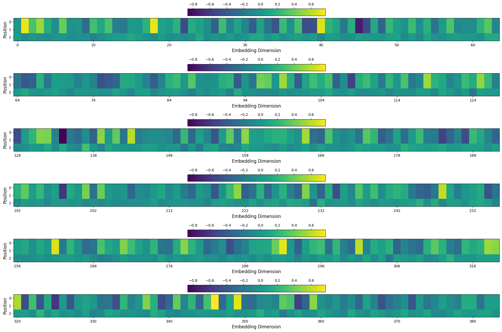
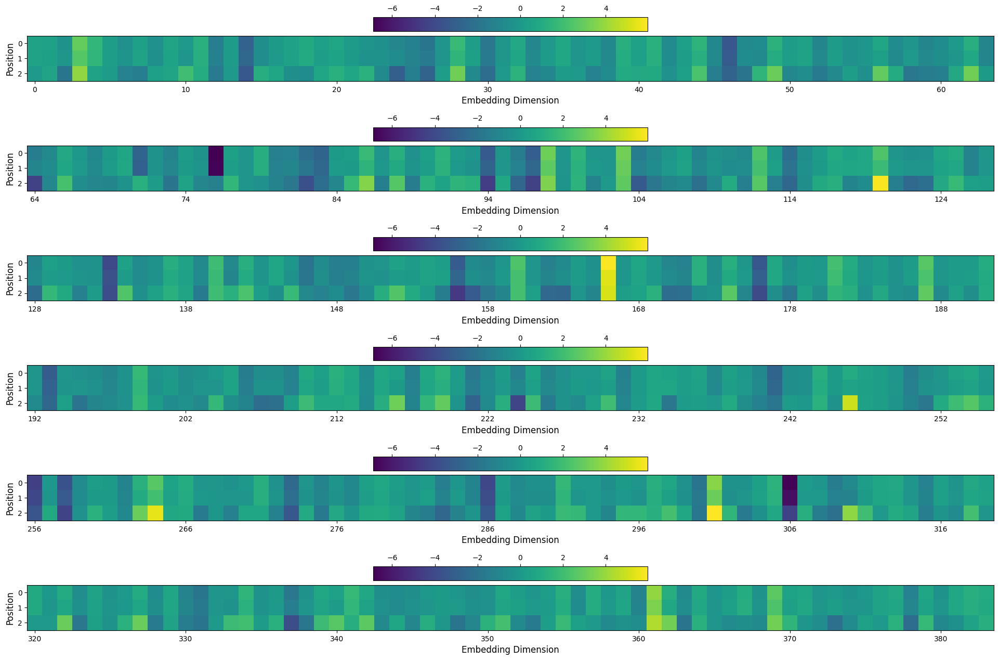

environment = get_environment()
device = 'cuda' if torch.cuda.is_available() else 'cpu'
ts = TinyShakespeareDataSet(cache_file=environment.code_root / 'nbs/artifacts/input.txt')
m, tokenizer = create_model_and_tokenizer(
saved_model_filename=environment.code_root / 'nbs/artifacts/shakespeare-20231112.pt',
dataset=ts,
device=device,
)
_, val_data = split_text_dataset(ts.text, tokenizer, train_pct=0.9, device=device)
encoding_helpers = EncodingHelpers(tokenizer, device)
accessors = TransformerAccessors(m, device)Deep Dive into Similar Strings Progress through the Model
Strings like
my most gr and ur most gr produce very similar block intermediates at the start of the model but diverge before the end. This notebook investigates what happens.
print(f"environment is {environment.name}")
print(f"device is {device}")environment is local_mac
device is cpuif list((environment.data_root / 'block_internals_results/large_files/slen10/').glob('*')) == []:
print("Run `make block_internals_slen10_dataset` in the project root to generate the required dataset")strings10 = all_unique_substrings(ts.text, 10)exp10 = BatchedBlockInternalsExperiment(
eh=encoding_helpers,
accessors=accessors,
strings=strings10,
output_dir=environment.data_root / 'block_internals_results/large_files/slen10/',
batch_size=10000,
)prompt1 = 'my most gr'
prompt2 = 'ur most gr'
bia1 = BlockInternalsAccessors(prompt1, encoding_helpers, accessors)
bia2 = BlockInternalsAccessors(prompt2, encoding_helpers, accessors)Let’s look at how the proj outputs for these diverge across the model:
for block_idx in range(n_layer):
proj_out1 = bia1.proj_output(block_idx)[0, -1, :]
proj_out2 = bia2.proj_output(block_idx)[0, -1, :]
print(f"Block {block_idx}: distance {torch.norm(proj_out1-proj_out2):.3f}, cosine sim {F.cosine_similarity(proj_out1, proj_out2, dim=-1):.3f}")Block 0: distance 0.792, cosine sim 0.995
Block 1: distance 0.949, cosine sim 0.997
Block 2: distance 2.432, cosine sim 0.968
Block 3: distance 3.950, cosine sim 0.932
Block 4: distance 6.427, cosine sim 0.780
Block 5: distance 5.856, cosine sim 0.740They get further apart and less cosine similar.
And same for ffwd output:
for block_idx in range(n_layer):
ffwd_out1 = bia1.ffwd_output(block_idx)[0, -1, :]
ffwd_out2 = bia2.ffwd_output(block_idx)[0, -1, :]
print(f"Block {block_idx}: distance {torch.norm(ffwd_out1-ffwd_out2):.3f}, cosine sim {F.cosine_similarity(ffwd_out1, ffwd_out2, dim=-1):.3f}")Block 0: distance 0.140, cosine sim 1.000
Block 1: distance 0.443, cosine sim 0.999
Block 2: distance 0.746, cosine sim 0.997
Block 3: distance 1.767, cosine sim 0.991
Block 4: distance 2.762, cosine sim 0.985
Block 5: distance 3.446, cosine sim 0.995They do get further apart but cosine similarity stays very close to 1.
What does the model predict for these?
# What are the predicted outputs for these two:
tokens1 = encoding_helpers.tokenize_string(prompt1)
logits1, _ = m(tokens1)
logits1 = LogitsWrapper(logits1.detach(), tokenizer)
tokens2 = encoding_helpers.tokenize_string(prompt2)
logits2, _ = m(tokens2)
logits2 = LogitsWrapper(logits2.detach(), tokenizer)
logits1.topk_tokens(k=10)[0][-1], logits2.topk_tokens(k=10)[0][-1]([('a', 0.4602494537830353),
('e', 0.35252559185028076),
('o', 0.09188850224018097),
('i', 0.09030349552631378),
('u', 0.004192721098661423),
('y', 0.0007521358784288168),
('r', 6.647213740507141e-05),
('l', 3.957989065384027e-06),
('v', 2.812936827467638e-06),
('w', 2.738903503995971e-06)],
[('a', 0.42030981183052063),
('e', 0.3680994510650635),
('o', 0.10530176013708115),
('i', 0.1002618744969368),
('u', 0.0053354003466665745),
('y', 0.0005905701545998454),
('r', 6.933557597221807e-05),
('l', 6.059422503312817e-06),
('w', 4.522385552263586e-06),
('n', 2.6605287075653905e-06)])These are extremely close.
torch.norm(logits1.probs() - logits2.probs()), torch.norm(logits1.logits - logits2.logits)(tensor(0.7939), tensor(20.7882))def imshow_tensor_in_chunks(
x: torch.Tensor,
n_chunks: int = 6,
n_embed: int = n_embed,
axes: Sequence[Axes] = [],
min: Optional[float] = None,
max: Optional[float] = None,
):
if len(axes) == 0:
fig, axes = plt.subplots(n_chunks, 1, figsize=(24, 16))
else:
assert len(axes) == n_chunks
if x.dim() == 1:
x = x.unsqueeze(dim=0)
assert x.dim() == 2, 'x must be 2D'
N, C = x.shape
assert C == n_embed, f'C must be {n_embed}'
assert C % n_chunks == 0, 'C must be divisible by n_chunks'
# Get the min and max of the whole tensor - we'll use these to set the clim
# values to be the same for all images (even though each one will have its
# own colorbar)
if min is None:
min = x.flatten().min().item()
if max is None:
max = x.flatten().max().item()
chunk_size = C // n_chunks
for i in range(n_chunks):
im = axes[i].imshow(
x[:, i * chunk_size : (i + 1) * chunk_size].detach().numpy(),
cmap='viridis',
interpolation='none',
)
im.set_clim(min, max)
axes[i].set_xlabel('Embedding Dimension', fontsize=12)
axes[i].set_xticks(range(0, chunk_size, 10))
axes[i].set_xticklabels(range(i * chunk_size, (i + 1) * chunk_size, 10))
axes[i].set_ylabel('Position', fontsize=12)
axes[i].set_yticks(range(N))
plt.colorbar(im, ax=[axes[i]], location='top')block_idx = 0
proj_out1 = bia1.proj_output(block_idx=block_idx)[0, -1, :]
proj_out2 = bia2.proj_output(block_idx=block_idx)[0, -1, :]
x = torch.stack([
proj_out1,
proj_out2,
(proj_out1 - proj_out2) * 10,
])
imshow_tensor_in_chunks(x)
block_idx = 5
proj_out1 = bia1.proj_output(block_idx=block_idx)[0, -1, :]
proj_out2 = bia2.proj_output(block_idx=block_idx)[0, -1, :]
x = torch.stack([
proj_out1,
proj_out2,
(proj_out1 - proj_out2) * 10,
])
imshow_tensor_in_chunks(x)
block_idx = 0
ffwd_out1 = bia1.ffwd_output(block_idx=block_idx)[0, -1, :]
ffwd_out2 = bia2.ffwd_output(block_idx=block_idx)[0, -1, :]
x = torch.stack([
ffwd_out1,
ffwd_out2,
(ffwd_out1 - ffwd_out2) * 10,
])
imshow_tensor_in_chunks(x)
block_idx = 5
ffwd_out1 = bia1.ffwd_output(block_idx=block_idx)[0, -1, :]
ffwd_out2 = bia2.ffwd_output(block_idx=block_idx)[0, -1, :]
x = torch.stack([
ffwd_out1,
ffwd_out2,
(ffwd_out1 - ffwd_out2) * 10,
])
imshow_tensor_in_chunks(x)
block_idx = 5
emb = bia1.io_accessors[block_idx].output('.')[0, -1, :]
zero_out_idx = n_embed - 1
emb2 = torch.cat([emb[:zero_out_idx], torch.zeros(n_embed-zero_out_idx)])
logits = LogitsWrapper(accessors.logits_from_embedding(unsqueeze_emb(emb)), tokenizer)
logits2 = LogitsWrapper(accessors.logits_from_embedding(unsqueeze_emb(emb2)), tokenizer)
logits.topk_tokens(k=10)[0][-1], logits2.topk_tokens(k=10)[0][-1]([('a', 0.46024957299232483),
('e', 0.35252535343170166),
('o', 0.09188905358314514),
('i', 0.09030317515134811),
('u', 0.004192722495645285),
('y', 0.0007521368097513914),
('r', 6.647209374932572e-05),
('l', 3.957986336899921e-06),
('v', 2.8129350084782345e-06),
('w', 2.7389019123802427e-06)],
[('a', 0.4389830529689789),
('e', 0.36069250106811523),
('i', 0.09699754416942596),
('o', 0.09658170491456985),
('u', 0.005966253113001585),
('y', 0.0006952937110327184),
('r', 6.115536234574392e-05),
('l', 3.7959973724355223e-06),
('v', 3.4647534903342603e-06),
('w', 2.603939492473728e-06)])